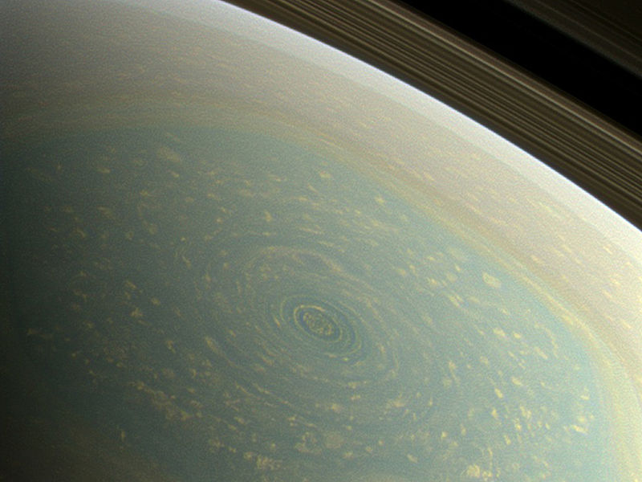
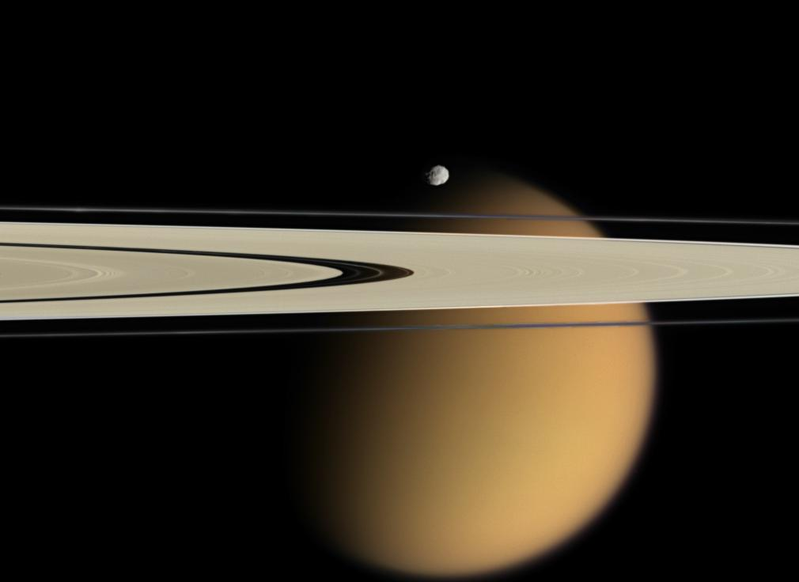
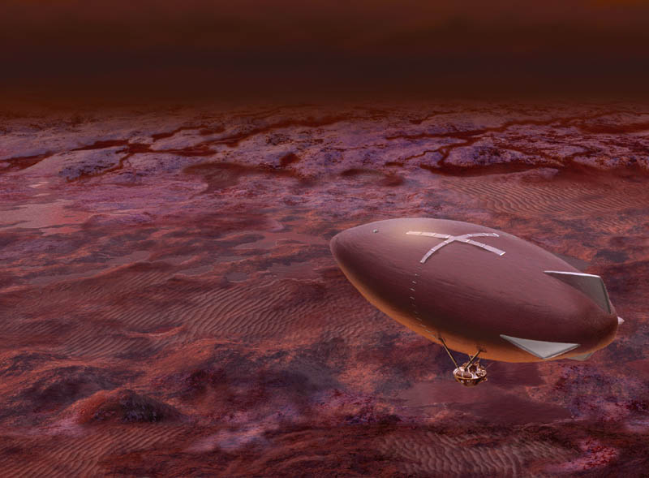
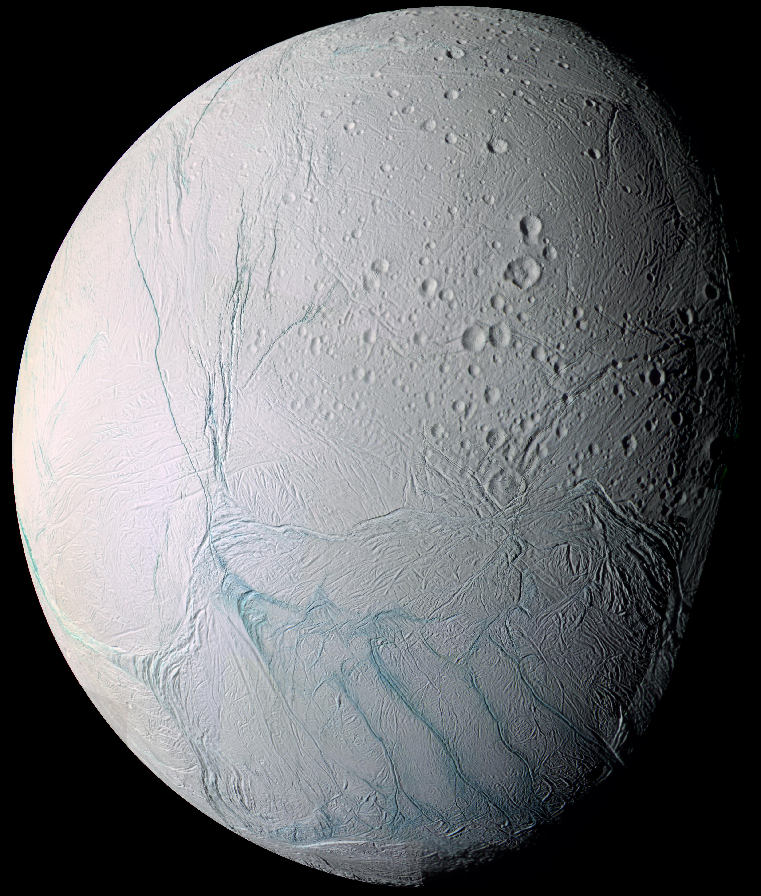

土星系统指南¶
土星是一颗非常美丽的行星，巨大的光环环绕这颗巨大的气态行星。光照洒在薄薄的光环上，如梦如幻。

遮住了太阳的土星环。（2013 年，Cassini 探测器拍摄。来源：NASA/JPL/Space Science Institute ）
土星北极的云层形成了一个巨大的六边形，一条边长达到了 13800 千米（而地球赤道周长只有大约 40000 千米）。这种壮观的规则形状一直是为游客们所称赞的。

土星系统有很多卫星，比较著名的卫星有土卫六（泰坦，Titan）和土卫二（恩克拉多斯，Enceladus）。

泰坦——真实的“中土世界”¶
泰坦表面很平坦，陨石坑也不多。然而泰坦的很多山名都是来自托尔金的中土世界，很多游客都会来亲眼目睹一些末日之山和米斯林山脉。 [1]
这是一个大气压远远高于地球表面大气压的地方，走在泰坦上，跟在地球上五米深的水下走路差不多，因此多数泰坦旅行项目都是通过飞艇观光的。泰坦上常年有橙色的雾气和厚厚的云层。

泰坦上的飞艇。（来源 Titan Aerobot ，原作者仅开放教育用途使用。）
泰坦上的很多极限飞行项目很热门，然而很多区域人工驱散了云层和雾气，加热了空气，提供各种各样的飞行运动，例如翼装飞行。泰坦上常年都有各种极限运动的竞赛。
当然，最重要的是，天气好的日子中，可以看到更加壮观的土星光环。
| [1] | 末日之山，即 Doom Mons，位于泰坦南半球（14-15°S 和 40-41°W 范围内），山顶被冰覆盖。米斯林山脉是位于泰坦赤道上（1-3°S 和 126-8°W 范围）的一个山脉。 |
土卫二——恩克拉多斯¶

太空中遥望土卫二，可以看到表面杂乱的条纹。这是卡西尼拍摄的照片，来自 Fresh Tiger Stripes on Enceladus @ NASA 。
土卫二是一个冰层覆盖的卫星，在冰层之下几十米的地方，就是我们需要的液态水，虽然其海洋的 pH 值达到了 11 到 12。[2]
游客常去观望土卫二南极，因为这里有细小的冰颗粒喷出，一直延伸到太空之中。[3]
| [2] | arXiv:1502.01946, The pH of Enceladus’ ocean |
| [3] | Fresh Tiger Stripes on Enceladus |